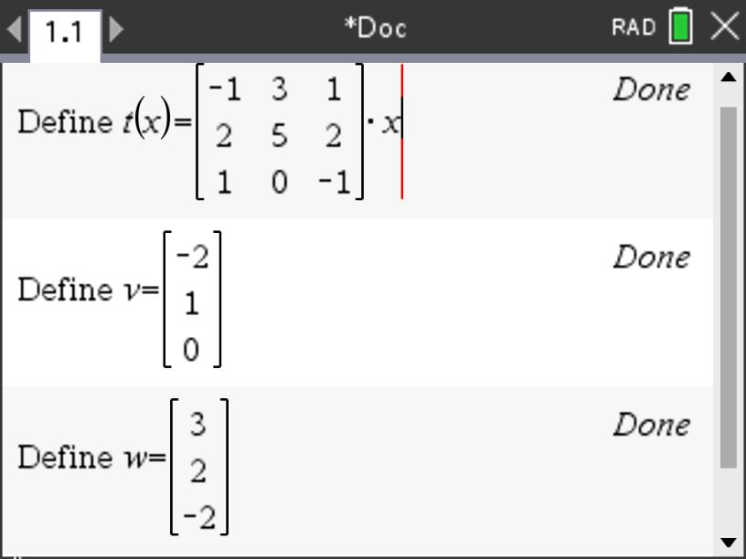

In this section we will look at linear algebra as a way to encode information and operate on it allowing us to move between different sets of information. To this end, we will define how matrices and vectors are operated on with binary operations like addition and multiplication. While multiplication of matrices may seem weird at first, you will see that it is defined as it is for convenience in manipulating data and transforming different types of values into other computed values based on them. We begin by considering a case where we want to move between a pricing scheme and the revenue it generates for three different companies with three different sets of orders of our products.
To accomplish this, we will use constructs created to deal with objects that contain multiple entries. In the scenario we are using where companies place orders for products, we want to encode the numerical values for the orders organizing them according to the product and company placing the order. Here just want to reduce the information to an array of values and so we define a matrix as an array of values (or objects) consisting of rows and columns. We typically contain these values with brackets or parentheses like:
In the matrices above, the columns could represent the numbers of each of four products being ordered and the rows could represent the three different companies placing the orders (see the table of orders for this situation given in Table 1.1.1).
We also define a vector as matrix with a single column such as \(\mathbf{v}=\begin{bmatrix}
2\\0\\-3
\end{bmatrix}\) or \(\mathbf{w}=\begin{bmatrix}
1\\7\\-1\\4
\end{bmatrix}
\text{.}\) Note that we are using boldface to denote the names of the vectors for convenience to distinguish them from numerical objects that we call scalars. In a text like this, using boldface makes sense in print, but typically, in written work, we use a harpoon over the name since boldface is not practical with a pen. In this case, we would write the names as \(\overset{\rightharpoonup}{v}\) or \(\overset{\rightharpoonup}{w}\) respectively.
You may have encountered vectors before in geometry or physics. We will go into greater detail later with respect to the geometric interpretation, but for now, the behavior remains the same in that operations still work as they do in geometry and physics. Essentially, vectors consist of components so that when the vectors are added, we simply add the components.
Definition1.1.1.
If \(\mathbf{v}\) and \(\mathbf{u}\) are vectors, we define vector addition as adding the vectors component by component. Note that the vectors must be of the same dimension.
For example, suppose we have the two vectors in \(\mathbb{R}^3\text{,}\)\(\begin{bmatrix}
1\\-5\\2
\end{bmatrix}
\text{and}
\begin{bmatrix}
2\\1\\7
\end{bmatrix}
\text{.}\) Adding these would result in \(\begin{bmatrix}
1\\-5\\2
\end{bmatrix} +
\begin{bmatrix}
2\\1\\7
\end{bmatrix} =
\begin{bmatrix}
3\\-4\\9
\end{bmatrix}
\text{.}\)
The other basic operation we can do with vectors is to scale them (geometrically make them longer or shorter or in the case of negative values, make them go in the opposite direction). For this reason, when we multiply the vector by a numerical value, we call that value a scalar. For example,
We can use these linear combinations applying them to our previous scenario for moving between price of materials and the revenue they generate.
Subsection1.1.1Linear Combinations and Dealing with Data
Continuing our scenario from the introduction. Suppose that a supplier provides four different products with prices, \(p_1, p_2, p_3, p_4 \text{,}\) to three companies. One thing we may want to do is to play with pricing schemes and look at the generated revenue we would get from each of the three companies. Suppose we have orders from the three companies for each of our four products as given in the table below.
Table1.1.3.Product Orders
Clients
Product 1
Product 2
Product 3
Product 4
Company 1
14
9
34
41
Company 2
32
7
12
52
Company 3
21
8
5
23
Activity1.1.1.Prices, Vectors, and Revenue.
Consider the scenario given above for the orders by three companies for four different products.
(a)
Thinking of the four Products from Table 1.1.3 as each being a vector where the entries of the vector store the orders made for each of the three companies, express this information as a set of four vectors in \(\mathbb{R}^3\text{.}\)
Answer.
Since there are four Products, we can express the orders from the three companies for each Product as an ordered triple (or vector) containing three entries (one for each company) for that product. This would give us a set of four vectors:
If Product 1 is priced at $12, Product 2 is priced at $9, Product 3 is priced at $15, and Product 4 is priced at $7, using these prices for each of the four Products in the table as scalars, write a linear combination of the vectors from your set from part (a) that when added will give a vector in \(\mathbb{R}^3\) that represents the revenue generated from each company. How much did you collect from each company? Feel free to use your CAS to do the computation here.
This means we received $1046 from Company 1, $991 from Company 2, and $560 from Company 3.
(c)
Since you allowed your CAS to do the computation for part (b), let’s think about how it is doing the arithmetic. Using what we have defined for combining scalar multiplication and vector addition in Equation 1.1.2, show the details of how the CAS was computing the resulting vector that you obtained in part (b).
In general, we can think of the selling price for each of the four Products as scalars \(p_1, p_2, p_3, p_4 \text{.}\) Give a general expression in terms of \(p_1, p_2, p_3, p_4 \) for the revenue generated by the purchases for the three companies expressing them as a linear combination of three-entry revenue vectors (one entry for each company) resulting in the revenue vector, \(\begin{bmatrix} r_1\\r_2\\r_3\end{bmatrix}\text{.}\)
Notice that where the product and sum are combined in part (c) we have the scalar values (or prices) of each Product ($12, $9, $15, and $7) being multipled by all entries in their respective vectors where the number of orders of each Product is placed in the vector in order by the company. When these vectors are then added, we get the total revenue for each company organized as an ordered triple (since there are three companies).
Here we are purposefully using an example where the number of entries in each set of values of interest (prices and revenue) are different to highlight that although we can have the same number of entries in each set be the same, it is not necessary. Eventually we will express the prices as a vector consisting of four entries and the revenue as a vector consisting of three entries where we can think of the process of going from prices to revenue as a transformation between worlds so to speak. In this case we will have four entries in one set of vectors/world (prices of different Products) meaning that these vectors exist in \(\mathbb{R}^4\) such as \(\begin{bmatrix}
p_1\\p_2\\p_3\\p_4
\end{bmatrix}\) and three entries in the other set of vectors/world (revenue from each of the three companies) existing in \(\mathbb{R}^3\) like \(\begin{bmatrix}
r_1\\r_2\\r_3\end{bmatrix}
\text{.}\)
In the previous activity, you may have noticed behaviors of the arithmetic when working with the vectors and scalars that are familiar. From your basic experiences in elementary school, you will recall some properties for operating on numbers that seem to also be happening in your work with vectors. Let’s explore these briefly by using the properties of vector addition and scalar multiplication we have just defined.
Activity1.1.2.Structure of Vectors.
Consider the vectors \(\mathbf{u}=
\begin{bmatrix}
-1\\2\\5
\end{bmatrix}\text{,}\)\(\mathbf{v}=
\begin{bmatrix}
2\\3\\0
\end{bmatrix}\text{,}\) and \(\mathbf{w}=
\begin{bmatrix}
-2\\-1\\4
\end{bmatrix}\text{.}\) Define each of these vectors in your computer algebra system (CAS).
(a)
Based on what we know about how we have defined vector addition and the fact that all of these vectors are in \(\mathbb{R}^3\text{,}\) when we add any two of them we will get another vector in \(\mathbb{R}^3\text{.}\) However, what other properties hold? Using your CAS, compute \(\mathbf{u}+\mathbf{v}\) and then compute \(\mathbf{v}+\mathbf{u}\text{.}\) Describe what you notice? Have you seen this behavior before with real numbers? What is this property called?
(b)
Using your CAS, compute \(\left(\mathbf{u}+\mathbf{v}\right)+\mathbf{w}\text{,}\) first by computing \(\mathbf{u}+\mathbf{v}\) and then adding \(\mathbf{w}\) to your result. Now compute \(\mathbf{u}+\left(\mathbf{v}+\mathbf{w}\right)\text{,}\) first by computing \(\mathbf{v}+\mathbf{w}\) and then adding your result to \(\mathbf{u}\text{.}\) Describe what you notice? Have you seen this behavior before with real numbers? What is this property called?
(c)
Using each of the vectors, \(\mathbf{u}\text{,}\)\(\mathbf{v}\text{,}\) and \(\mathbf{w}\text{,}\) add the vector \(\begin{bmatrix} 0\\0\\0\end{bmatrix}\) to each. Describe what you notice. Have you seen this behavior before with real numbers? What is this property called?
(d)
Using each of the vectors, \(\mathbf{u}\text{,}\)\(\mathbf{v}\text{,}\) and \(\mathbf{w}\text{,}\) negate each entry of \(\mathbf{u}\) and add the resulting vector to \(\mathbf{u}\text{.}\) Describe what you notice. Repeat this process with \(\mathbf{v}\) and \(\mathbf{w}\text{.}\) Do you get similar results? Have you seen this behavior before with real numbers? What is this property called?
(e)
Using your CAS, compute \(2\cdot \left(\mathbf{u}+\mathbf{v}\right)\text{,}\) first by computing \(\mathbf{u}+\mathbf{v}\) and then multiplying 2 times your result. Now compute \(2\cdot \mathbf{u}+2\cdot \mathbf{v}\text{,}\) first by computing 2 times each vector and then adding your results together. Describe what you notice? Have you seen this behavior before with real numbers? What is this property called?
(f)
Given that \(2+3=5\text{,}\) compute \(5\cdot \left(\mathbf{u}+\mathbf{v}\right)\) and \(2\cdot \mathbf{u} + 3\cdot \mathbf{v}\text{.}\) Describe what you notice? Have you seen this behavior before with real numbers? What is this property called?
(g)
Using your CAS, compute \(2 \left(3\mathbf{u}\right)\text{,}\) first by computing \(3\mathbf{u}\) and then multiplying 2 times your result. Now compute \(\left(2\cdot3\right) \mathbf{u}\text{,}\) first by computing 2 times 3 and then multiplying your result by \(\mathbf{u}\text{.}\) Describe what you notice? Have you seen this behavior before with real numbers? What is this property called?
Since we have seen these properties before from our work with real numbers, we can use them with vectors and scalars so that we can manipulate these combinations of operations. To this end, we can define a "world" where objects like vectors and scalars behave in a way that we expect and can use.
Definition1.1.4.Vector Space.
A vector space is a nonempty set \(V\) of objects, called vectors, on which are defined two operations, called addition and scalar multiplication (for real numbers), that satisfy the following axioms. For any \(\mathbf{u}, \mathbf{v}, \mathbf{w} \in V\) and \(c, d \in \mathbb{R}\text{:}\)
There exists a zero vector, denoted \(\mathbf{0} \in V\text{,}\) such that \(\mathbf{u}+\mathbf{0}=\mathbf{u}, \forall \mathbf{u} \in V\text{.}\)
For each \(\mathbf{u} \in V\text{,}\) there exists a vector denoted \(-\mathbf{u} \in V\) such that \(\mathbf{u}+\left(-\mathbf{u}\right)=\mathbf{0}\text{.}\)
The scalar multiple of \(\mathbf{u}\) by \(c\text{,}\) denoted \(c\mathbf{u} \in V\text{.}\)
Subsection1.1.2Transforming Data and Matrix Multiplication
As we have seen, we can use vectors to represent any entity that might have multiple components. This allows us to manipulate values of common components by adding or multiplying them while keeping the components separated in the process. This use of linear combinations of vectors is useful, but the real desire of the previous scenario is to examine how manipulating one set of values (say, prices of products) affects another set of values (revenue from each company). Just as we explored functional relationships in algebra and calculus, we also might want to explore functional relationships with objects that have not just one value as an input and one corresponding value as an output, but rather inputs that have many component values and a corresponding output that also has many component values.
Recall that one of our first experiences with functions dealt with simple linear relationships. For example, Hooke’s Law states that there is a simple linear relationship between force on a stretched or compressed spring and the distance of the associated stretch or compression, \(F=kx\text{,}\) where \(k\) is a constant of proportionality. If we use function notation to express that force, \(F\text{,}\) is a function of stretch, \(x\text{,}\) we indicate the independent variable by placing it in parentheses getting, \(F\left(x\right)=kx\text{.}\)
In this situation, we obtain the force as an output by multiplying the stretch, \(x\text{,}\) by a numerical value, \(k\text{.}\) What if in our scenario for the relationship between pricing of products and the revenue generated from each of our three companies, we could have a simple multiplication by something that acted like \(k\) in our Hooke’s Law relationship? In the \(F\left(x\right)=kx\) case, there is a single value, \(k\text{,}\) that affects the output, \(F\text{,}\) for a given input, \(x\text{.}\) However, in the situation with price vs revenue, there are many values impacting the output of revenue for an input vector of prices (namely, all of the different order values provided by the companies placing orders). So, our k-equivalent must take into account all of the values of the orders placed by the companies. Here we can think of our single multiplier (like that of \(k\)) as being comprised of an array of order values for the products like we had for the linear combination of the vectors
as an input vector, \(\begin{bmatrix}
p_1\\p_2\\p_3\\p_4
\end{bmatrix}
\text{,}\) so that we get a relationship that is structurally similar to \(F=kx\text{:}\)
where \(\begin{bmatrix}
r_1\\r_2\\r_3\end{bmatrix} \) acts like \(F\text{,}\)\(\begin{bmatrix}
p_1\\p_2\\p_3\\p_4
\end{bmatrix}\) acts like \(x\text{,}\) and \(\begin{bmatrix}
14\amp 9\amp 34\amp 41\\
32\amp 7\amp 12\amp 52\\
21\amp 8\amp 5\amp 23
\end{bmatrix}\) acts like \(k\text{.}\)
The use of a matrix as a single entity that we can use to multiply by a vector brings an interesting question. What does it mean to multiply by a matrix? If we look at what we want to do from our functional perspective in the case above, we would like to have the outputs represent the revenue in the way we ultimately added them up in the linear combination of the vectors with the prices viewed as scalars for the column vectors in the matrix. This means that we will need to define the multiplication of a matrix and a vector in such a way that we get:
Now this may seem complicated, but one way to look at the process is that we proceed across a row in the matrix while moving down the vector component by component adding the products of the row entries of the matrix and the corresponding component entries of the vector. For example, for the top entry in the resulting revenue vector, we obtained it by moving across the first row with values 14, 9, 34, and 41, while multiplying each by their respective position price value \(p_1\text{,}\)\(p_2\text{,}\)\(p_3\text{,}\) and \(p_4\) and then adding these four products together. This gives \(p_1\cdot14 + p_2\cdot9 + p_3\cdot34 + p_4\cdot41\text{.}\) Now we proceed similarly for each row moving across the row and down the vector creating product combinations and adding them together as we go. The row of the matrix we use for the computation becomes the row position in the resulting vector we are creating (in this case, revenue).
You will likely notice that the result of the way we have chosen to define the multiplication of a matrix and a vector only makes sense if the number of columns of the matrix matches the number of entries (rows of components) of the vector.
Subsection1.1.3Transformations of Vectors
Now that we have defined what it means to multiply a matrix and a vector, we can go back to the concept that motivated it, namely, the desire to move between an input vector and an output vector. In a way, we are looking to transform one type of vector into another type of vector. When we think of our example of Hooke’s Law as transforming stretch or compression into force, we note that this happens in our daily lives and we are not often even aware it is there.
Consider a trip to the grocery store. In the produce aisle, we take zucchini and place them on a scale. In turn, the scale returns a weight (force) in pounds (if you are in the USA) or mass in kilograms (practically anywhere else in the world). Inside the scale, there is a spring that is being compressed or stretched. This value is then transformed into a value of weight or mass using Hooke’s Law. In fact, it is more likely the case that you are more familiar with a transformation in form of cost instead of weight or mass as most digital scales today allow us to scan the scale’s output barcode registering a cost in our "shop and scan" app. Below is a video illustrating this process.
-----------INSERT VIDEO HERE--------------
So what are the characteristics of this type of transformation? Consider the case from the video where we saw that the doubling the force (or mass) corresponded in the doubling of the stretch. Similarly, tripling the force would triple the stretch. In general, this means that any multiple of stretch will correspond to the same multiple of force (or mass or cost) depending on the output we desire for the transformation. We can see this from the basic algebra from Hooke’s Law.
What this says is that scalar multiplication is preserved.
Now this is all well and good if we are looking at replicating the same stretch multiple times (e.g. all of our zucchini are the exact same weight), but what about the case where we have multiple numbers of zucchini of varying weight (corresponding to varying stretches)? We also want to have it be the case that if we place two different "stretch" zucchinis on the scale that the resulting weight will simply be added together as well so that their corresponding costs will also be added together (since we are paying based on the cost/unit weight). In this case, suppose we have two possibly different stretches \(x\text{,}\) and \(y\text{.}\) Here we get
What this says is that vector addition is preserved. In this case, we can think of the inputs, \(x\) and \(y\text{,}\) as vectors with only one component. In fact, if you have ever taken a physics class, you will recall that both force and stretch in Hook’e Law were considered vectors since along a single line we associate a positive and negative direction for these values to indicate direction of the force or stretch. We often represent this relationship as a vector relationship, \(\mathbf{F}=k\mathbf{x}\) or \(\overset{\rightharpoonup}{F}=k\overset{\rightharpoonup}{x}\text{.}\)
Recall from your Algebra 1 days, a function like \(F=kx\) is the most basic of linear functions. Therefore, it should come as no surprise that these two aspects of behavior (preservation of scalar multiplication and vector addition) by this type of function are the defining properties of what we call linear transformations.
Activity1.1.3.
In the case of the force and spring stretch, we had a spring constant, \(k\text{,}\) as our constant of proportionality where it was a single value that worked for a specific spring. As we have seen, we may have relationships where this "constant" is actually dependent on many different values instead of a single one (i.e. a matrix of values). Can we still have these two operations (scalar multiplication and vector addition) work when the thing we are multiplying the vectors by is a matrix? Suppose we have a matrix transformation given by \(T\left(\mathbf{x}\right)=
\begin{bmatrix}
-1 \amp 3 \amp 1\\
2 \amp 5 \amp 2\\
1 \amp 0 \amp -1
\end{bmatrix}\mathbf{x}\text{.}\) Define this transformation in your CAS and then define \(\mathbf{v}=\begin{bmatrix} -2\\1\\0\end{bmatrix}\) and \(\mathbf{w}=\begin{bmatrix} 3\\2\\-2\end{bmatrix}\text{.}\)

Figure1.1.5.Defining Transformation on TI-Nspire CX II CAS
(a)
Compute \(T\left(\mathbf{v}\right)\) and \(T\left(\mathbf{w}\right)\) and add them.
(b)
Compute \(\mathbf{v}+\mathbf{w}\) and \(T\left(\mathbf{v}+\mathbf{w}\right)\text{.}\) Describe your observations relative to your responses from part(a).
(c)
Compute \(T\left(4\mathbf{v}\right)\) and \(4T\left(\mathbf{v}\right)\text{.}\) Describe your observations.
(d)
To see if your observations will hold in general for this particular matrix, create two vectors on your CAS , \(\mathbf{x}=\begin{bmatrix} x_1\\x_2\\x_3\end{bmatrix}\) and \(\mathbf{y}=\begin{bmatrix} y_1\\y_2\\y_3\end{bmatrix}\text{.}\) Using your CAS, find expressions for \(T\left(\mathbf{x}+\mathbf{y}\right)\) and \(T\left(\mathbf{x}\right)+T\left(\mathbf{y}\right)\text{.}\) Does your earlier observation hold for any two vectors in \(\mathbb{R}^3\text{?}\) Explain.
(e)
Using, \(c\text{,}\) to represent any real number, find expressions for \(T\left(c\cdot \mathbf{x}\right)\) and \(c\cdot T\left(\mathbf{x}\right)\text{.}\) Does your observation from part (c) hold for all vectors in \(\mathbb{R}^3\text{?}\) Explain.
(f)
Given how we defined matrix-vector multiplication out of linear combiinations, come up with an argument for why all such matrix transformations must be \(\mathbf{linear}\)\(\mathbf{transformations}\) preserving both scalar multiplication and vector addition.
Definition1.1.6.Linear Transformation.
Suppose \(T\) is a mapping between \(\mathbb{R}^n\) and \(\mathbb{R}^m\text{,}\)\(T: \mathbb{R}^n\rightarrow \mathbb{R}^m\) (\(n\) and \(m\) need not be distinct) such that both scalar multiplication and vector addition are preserved.
where \(\mathbf{v}, \mathbf{w} \in \mathbb{R}^n\text{,}\) and \(\alpha\) is a scalar. Then the mapping \(T\) is called linear or a linear transformation.
Just as the relationship of Hooke’s Law can be thought of as transforming stretch into force, in our scenario between pricing structures and the revenue generated, we are similarly looking to transform a pricing scheme into the resulting revenue for our three companies. We can even use function notation to represent this relationship. If we let the vector \(\mathbf{p}=\begin{bmatrix}
p_1\\p_2\\p_3\\p_4 \end{bmatrix}\text{,}\) we can think of the product of the matrix of orders by the companies and the vector \(\mathbf{p}\) as a revenue transformation (or function), \(R\text{,}\) given by
This is effectively a mapping between vectors in \(\mathbb{R}^4\) and vectors in \(\mathbb{R}^3\text{.}\) We can represent this mapping as \(R:\mathbb{R}^4 \rightarrow \mathbb{R}^3\text{.}\)
Activity1.1.4.Price to Revenue: Linear Transformation?
In the previous activity, we illustrated how we can show that a matrix transformation between the same spaces (\(\mathbb{R}^3\) to \(\mathbb{R}^3\)) is, in fact, a linear transformation. In this activity, let’s take a similar approach to show we can also make the same claim for mappings between different spaces (\(\mathbb{R}^4\) to \(\mathbb{R}^3\)). Here we will use our earlier example of transforming price scenarios into revenues for our three companies.
(a)
Consider the transformation \(R=T\left(\mathbf{p}\right)=
\begin{bmatrix}
14\amp 9\amp 34\amp 41\\
32\amp 7\amp 12\amp 52\\
21\amp 8\amp 5\amp 23
\end{bmatrix}
\mathbf{p}\text{,}\) where \(\mathbf{p}=\begin{bmatrix} p_1\\p_2\\p_3\\p_4\end{bmatrix}\text{.}\) Find expressions for \(T\left(c\cdot \mathbf{p}\right)\) and \(c\cdot T\left(\mathbf{p}\right)\text{.}\) Is scalar multiplication preserved for all vectors in \(\mathbb{R}^4\text{?}\) Explain.
(b)
To see if preservation of vector addition holds in general for this particular matrix, create two vectors on your CAS , \(\mathbf{p}=\begin{bmatrix} p_1\\p_2\\p_3\\p_4\end{bmatrix}\) and \(\mathbf{q}=\begin{bmatrix} q_1\\q_2\\q_3\\q_4\end{bmatrix}\text{.}\) Using your CAS, find expressions for \(T\left(\mathbf{p}+\mathbf{q}\right)\) and \(T\left(\mathbf{p}\right)+T\left(\mathbf{q}\right)\text{.}\) Is vector addition preserved for any two vectors in \(\mathbb{R}^4\text{?}\) Explain.
Lemma1.1.7.
If \(T\) is a linear transformation, then it must map the zero vector from the domain to the zero vector in the range. In other words, \(T\left(\mathbf{0}_D\right)=\mathbf{0}_R\text{.}\)
Proof.
Suppose \(T:\mathbb{R}^n \rightarrow \mathbb{R}^m\) is a linear transformation and \(\mathbf{v} \in \mathbb{R}^n\text{.}\) Well since \(-\mathbf{v} \in \mathbb{R}^n\text{,}\) we know that \(T\left(\mathbf{0}\right)=T\left(\mathbf{v}+\mathbf{-v}\right)\text{.}\) Since vector addition is preserved, we get that this is equal to \(T\left(\mathbf{v}\right)+T\left(\mathbf{-v}\right)\text{.}\) Again, as a linear transformation, we know that scalar multiplication is also preserved and so \(T\left(\mathbf{-v}\right)=-T\left(\mathbf{v}\right)\) and thus \(T\left(\mathbf{v}\right)+T\left(\mathbf{-v}\right)=T\left(\mathbf{v}\right)+
-T\left(\mathbf{v}\right)=\mathbf{0}\) where \(\mathbf{0}\) here is in \(\mathbb{R}^m\text{.}\)
We began this section looking at how we can represent practical data and relationships using matrices and vectors along with operations allowing us to transform one type of vector into another. In the next few sections, we will extend this view to consider geometric representations that have far reaching applications into areas such as digital file compression and image detection. Eveytime you access your phone using facial recognition, you are using linear algebra. Vectors and matrices play a key role in your everyday life and you may not even be aware of it!